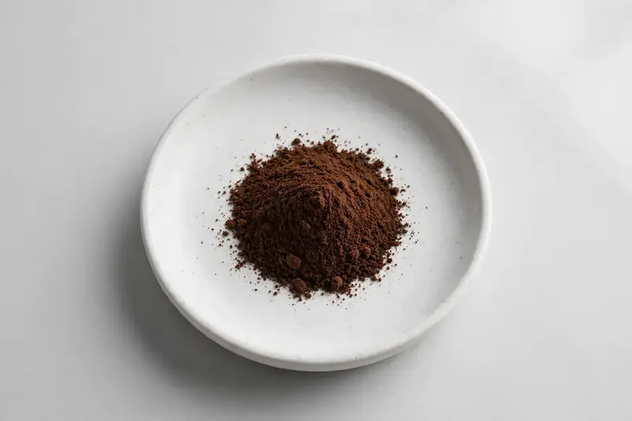

Ganoderma lucidum — Fruiting-body Ganoderma lucidum standardized to polysaccharides and triterpenes, for supplement and functional beverage brands.

Overview
Reishi extract is a long-established functional ingredient used in capsules, powders, and functional drinks, sourced by buyers who need a reliable Ganoderma lucidum supply with clear documentation. We are a Xi'an-based trading company founded in 2019, working with partner producers rather than operating our own factory or lab. Tell us your target specification and we confirm what we can supply.
Specifications below reflect commonly requested options in the market — not a stock list. Share your target spec and we'll confirm exactly what we can supply, honestly.
| Specification | Details |
|---|---|
| Species identity | Ganoderma lucidum |
| Source material | Fruiting body |
| Marker compound | Polysaccharides & triterpenes — commonly requested: 10%-50% polysaccharides (UV); triterpenes on request |
| Appearance | Dark brown to reddish-brown fine powder |
| Analytical methods | Methods referenced in buyer specifications: UV |
| Mesh size | Typically 80–100 mesh (confirm per inquiry) |
| Testing | COA/TDS arranged on request; scope agreed per your spec |
Applications
Documentation
Specifications above are common market options, not confirmed stock. Share your target spec and we will confirm what can be supplied, with COA/TDS arranged on request and testing scope agreed to your specification.
Buying guide
Polysaccharide content is typically reported as a percentage, but the assay method matters for comparison. UV-based methods (often using glucose as a standard) are common, and they measure total polysaccharides rather than beta-glucans specifically. If your specification or label requires beta-glucan figures, ask whether that is tested separately and by what method. Also confirm whether the polysaccharide value is on a dried-weight basis, since moisture variation can shift the reported figure between lots.
Source material strongly affects the profile. Fruiting body and mycelium produce different polysaccharide and triterpene patterns, and some suppliers blend the two. Ask which part is used and whether the COA identifies it. Appearance is a useful check: dark brown to reddish-brown fine powder is typical for reishi extract, while very light or pale material may indicate a different part or dilution. If your formulation depends on triterpenes, confirm whether those are measured and reported alongside polysaccharides.
Reishi extract is hygroscopic and can clump if exposed to moisture. Store in sealed containers in a cool, dry place away from direct light. During sampling and blending, minimize open-air exposure and reseal promptly. If your facility is humid, use desiccant and consider a controlled weighing area. For long transit, request moisture-barrier packaging, as caking on arrival can affect flow and dispersion in your finished product.
FAQ
Related products
Hericium erinaceus
Key marker: Beta-Glucan
View specs →Cordyceps militaris
Key marker: Cordycepin
View specs →Inonotus obliquus
Key marker: Polysaccharides
View specs →Trametes versicolor
Key marker: Beta-Glucan
View specs →Grifola frondosa
Key marker: Beta-Glucan
View specs →Buyer guides
Buyer’s guide
What beta-glucan really tells you, why grain-grown mycelium can mislead, and the questions to ask any mushroom supplier.
Read the guide →Buyer’s guide
Identity, actives, heavy metals, micro — what each section of a Certificate of Analysis means, and the red flags that tell you to walk away.
Read the guide →Send your target spec and volumes — we'll respond with a tailored quotation.
Request a Quote